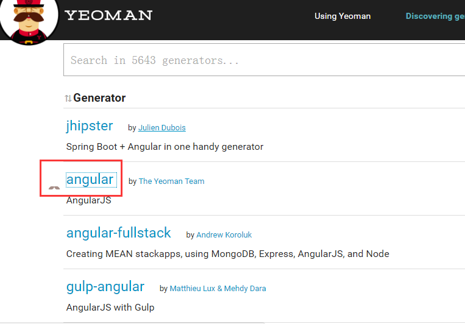

官网地址：http://yeoman.io/。
Yeomen是现代web项目的脚手架工具。
打个比喻：如果前端项目是工厂的产品的话，yeoman就像工厂的流水线，标准化、傻瓜化、批量化产品生产，生产过程乏味了，但效率提高了。
安装也yeomen时是yo而不是yeomen
npm install -g yo
安装好Yeomen后，找到适合你项目的项目生成器，按照项目生成器的说明安装其他工具，然后生成项目。
以angular项目为例说明。
在http://yeoman.io/generators/找到angualr项目生成器。

并打开angualr项目生成器的说明页面：https://github.com/yeoman/generator-angular#readme。
按照说明我们除了安装yo之外，还需要安装grunt-cli, bower, generator-angular and generator-karma。
npm install -g grunt-cli bower generator-karma generator-angular
如果你打算在项目中用到sass，你需要安装ruby与compass。
接下来创建一个目录，并进入这个目录。
mkdir my-angular-project && cd $_
通过yo angular [app-name]生成angular项目，假如你的项目叫做dajiangtai。
yo angular dajiangtai
在生成过程中会人性的提醒是否使用sass、bootstrap等，输入y确认使用，输入n不使用
OK，现在可以执行grunt构建项目，执行grunt serve预览项目。
补充下，如果执行grunt或者grunt serve报错grunt-cli: The grunt command line interface (v1.2.0)...可能是grunt没有添加到依赖项中，解决方法很简单。
执行npm install grunt --save-dev
成功后执行npm install更新依赖项
现在可以执行grunt构建项目，执行grunt serve预览项目
Yeoman其实是三个工具的集合：yo、grunt、bower.
yo：Yeoman核心工具，项目工程依赖目录和文件生成工具，项目生产环境和编译环境生成工具.
grunt：grunt前端构建工具.
bower：Web开发的包管理器，概念上类似npm，npm专注于nodeJs模块，而bower专注于CSS、JavaScript、图像等前端相关内容的管理.